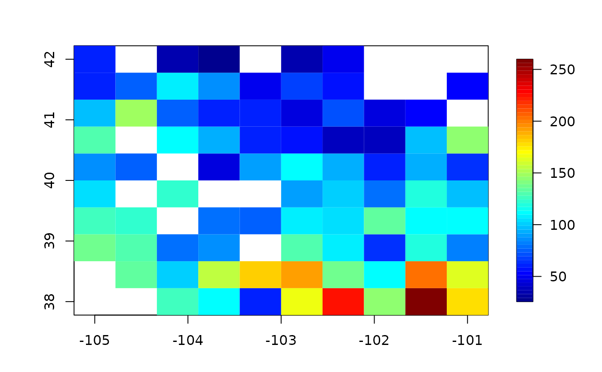

as.image.RdDiscretizes a set of 2-d locations to a grid and produces a image object with the z values in the right cells. For cells with more than one Z value the average is used.
Values of image.
A matrix giving the row and column subscripts for each image value in Z. (Not needed if x is specified.)
A list with components x and y of equally spaced values describing the centers of the grid points. The default is to use nrow and ncol and the ranges of the data locations (x) to construct a grid.
Locations of image values. Not needed if ind is specified.
Same as nx this is depreciated.
Same as ny this is depreciated.
If two or more values fall into the same pixel a weighted average is used to represent the pixel value. Default is equal weights.
If true NA's are removed from the Z vector.
Number of grid point in X coordinate.
Number of grid points in Y coordinate.
If FALSE grid points are assumed to be the grid midpoints. If TRUE they are the grid box boundaries.
The function to apply to common values in a grid box. The default is a mean (or weighted mean). If FUN is specified the weights are not used.
An list in image format with a few more components. Components x and y are the grid values , z is a nrow X ncol matrix with the Z values. NA's are placed at cell locations where Z data has not been supplied. Component ind is a 2 column matrix with subscripts for the locations of the values in the image matrix. Component weights is an image matrix with the sum of the individual weights for each cell. If no weights are specified the default for each observation is one and so the weights will be the number of observations in each bin.
The discretization is straightforward once the grid is determined. If two or more Z values have locations in the same cell the weighted average value is taken as the value. The weights component that is returned can be used to account for means that have different numbers (or precisions) of observations contributing to the grid point averages. The default weights are taken to be one for each observation. See the source code to modify this to get more information about coincident locations. (See the call to fast.1way)
image.smooth, image.plot, Krig.discretize, Krig.replicates
# convert precip data to 50X50 image
look<- as.image( RMprecip$y, x= RMprecip$x, nx=50, ny=50)
image.plot( look)
# reduced grid extent compared to the domain
gridList<- list( x = seq(-105,-101,length.out=10),
y = seq( 38, 42,length.out=10) )
look2<- as.image( RMprecip$y, x= RMprecip$x,grid=gridList)
#> Warning: Some locations are outside the range of the grid
image.plot( look2)

# number of obs in each cell -- in this case equal to the
# aggregated weights because each obs had equal weight in the call
image.plot( look$x ,look$y, look$weights, col=terrain.colors(50))
# hot spot is around Denver